Home
以下示例序列突出显示Portfolio了Financial Toolbox中对象的功能。具体而言，这些示例使用该Portfolio对象来说明如何设置均方差投资组合优化问题，这些问题集中在双基金定理、交易成本和营业额约束的影响、如何获取最大化夏普比率的投资组合以及如何建立了两种流行的对冲基金策略-美元中性和130-30投资组合。
设置数据
每个示例都具有用于计算30只“蓝筹”股票每月总回报的矩。尽管这些数据是从真实数据中得出的，但它们仅用于说明目的，并不代表特定资产或市场表现。该数据包含在文件BlueChipStockMoments.mat中，包括变量列表AssetList中的资产标识符变量，变量AssetMean和AssetCovar中的资产收益的均值和协方差，以及变量CashMean，CashVar，MarketMean，和MarketVar中的现金和市场回报的均值和方差。由于大多数分析都需要使用资产收益率的标准差作为风险，现金和市场方差的代表，因此将市场的方差转换为标准差。
load BlueChipStockMoments
?
mret = MarketMean;
mrsk = sqrt(MarketVar);
cret = CashMean;
crsk = sqrt(CashVar);创建投资组合对象
首先用Portfolio创建一个“标准” Portfolio对象，将资产列表、无风险利率以及资产返回时刻合并到该对象中。
p = Portfolio('AssetList',AssetList,'RiskFreeRate',CashMean);
p = setAssetMoments(p,AssetMean,AssetCovar);为了提供比较的基础，建立一个等权投资组合，并使其成为Portfolio对象中的初始投资组合。请记住，稍后要建立的对冲投资组合将需要不同的初始投资组合。创建初始投资组合后，estimatePortMoments函数将估算等权投资组合收益的均值和标准差。
p = setInitPort(p,1/p.NumAssets);
[ersk,eret] = estimatePortMoments(p,p.InitPort);专门的“帮助”函数portfolioexamples_plot（请参见工具函数部分）使得可以在此处绘制所有要开发的结果。第一张图显示了根据资产的均值和收益的标准偏差分配的资产。此外，等权重、市场和现金投资组合都绘制在同一图上。请注意，portfolioexamples_plot函数将每月总回报转换为年化总回报。
clf;
portfolioexamples_plot('Asset Risks and Returns', ...
{'scatter', mrsk, mret, {'Market'}}, ...
{'scatter', crsk, cret, {'Cash'}}, ...
{'scatter', ersk, eret, {'Equal'}}, ...
{'scatter', sqrt(diag(p.AssetCovar)), p.AssetMean, p.AssetList, '.r'});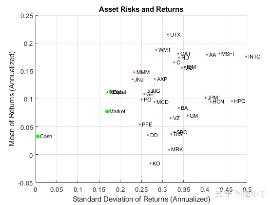
设置投资组合优化问题
使用需要完全投资的仅做多头投资组合（非负权重之和必须等于1）的setDefaultConstraints函数来设置“标准”或默认的平均方差投资组合优化问题。给定初始问题，用函数estimateFrontier和estimatePortMoments估计函数的有效边界，其中estimateFrontier估计有效的投资组合，estimatePortMoments估计投资组合的风险和收益。下图覆盖到前一个图的有效边界上。
p = setDefaultConstraints(p);
?
pwgt = estimateFrontier(p,20);
[prsk,pret] = estimatePortMoments(p,pwgt);
?
% Plot efficient frontier
?
clf;
portfolioexamples_plot('Efficient Frontier', ...
{'line', prsk, pret}, ...
{'scatter', [mrsk, crsk, ersk], [mret, cret, eret], {'Market', 'Cash', 'Equal'}}, ...
{'scatter', sqrt(diag(p.AssetCovar)), p.AssetMean, p.AssetList, '.r'});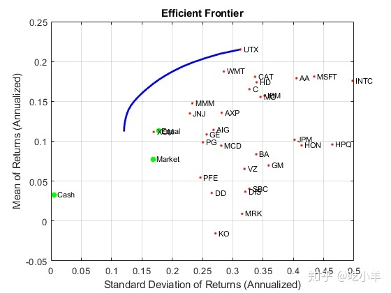
为有效边界绘制切线
托宾的共同基金定理（Tobin，1958年）说，投资组合分配问题可以看作是在无风险资产和有风险资产之间进行分配的决策。在均值方差框架中，现金可以用作无风险资产的代理，而有效边界上的有效投资组合可以用作风险组合，这样现金和此投资组合之间的任何分配都可以控制有效边界上的所有其他投资组合。此投资组合称为“ 相切”投资组合，因为它位于有效边界上的点，在该点上，源自无风险资产的切线与有效边界相接触。
假设Portfolio对象已经具有无风险利率，通过创建Portfolio对象的副本来获得切线，该副本的预算限制允许在0％到100％之间分配现金。由于Portfolio对象是值对象，因此可以通过将Portfolio函数或“set”函数的输出分配给Portfolio对象的新实例来创建副本。该图显示了有效边界，而Tobin的分配形成了有效边界的切线。
q = setBudget(p, 0, 1);
?
qwgt = estimateFrontier(q,20);
[qrsk,qret] = estimatePortMoments(q,qwgt);
?
% Plot efficient frontier with tangent line (0 to 1 cash)
?
clf;
portfolioexamples_plot('Efficient Frontier with Tangent Line', ...
{'line', prsk, pret}, ...
{'line', qrsk, qret, [], [], 1}, ...
{'scatter', [mrsk, crsk, ersk], [mret, cret, eret], {'Market', 'Cash', 'Equal'}}, ...
{'scatter', sqrt(diag(p.AssetCovar)), p.AssetMean, p.AssetList, '.r'});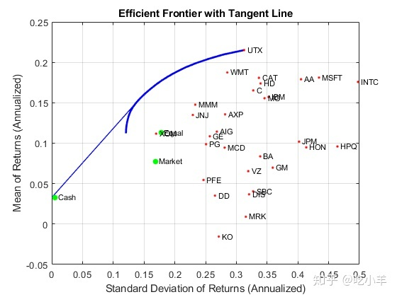
请注意，现金实际上具有较小的风险，因此切线不会穿过现金资产。
获取风险和回报范围
为了获得风险目标值或收益目标值的有效投资组合，有必要获得有效边界上所有投资组合的风险和收益范围。这是通过estimateFrontierLimits函数完成的。
[rsk,ret] = estimatePortMoments(p,estimateFrontierLimits(p));
?
display(rsk);
rsk = 2×1
?
0.0348
0.0903
display(ret);
ret = 2×1
?
0.0094
0.0179每月投资组合收益的范围在0.9％至1.8％之间，投资组合风险的范围在3.5％至9.0％之间。以年度计算，投资组合收益的范围为11.2％至21.5％，投资组合风险的范围为12.1％至31.3％。
寻找具有目标回报率和目标风险的投资组合
考虑到风险和回报的范围内，可以使用以下函数找到具有目标值回报和目标风险有效前沿的具体投资组合：estimateFrontierByReturn和estimateFrontierByRisk。
TargetReturn = 0.20; % Input target annualized return and risk here
TargetRisk = 0.15;
?
% Obtain portfolios with targeted return and risk
?
awgt = estimateFrontierByReturn(p,TargetReturn/12);
[arsk,aret] = estimatePortMoments(p,awgt);
?
bwgt = estimateFrontierByRisk(p,TargetRisk/sqrt(12));
[brsk,bret] = estimatePortMoments(p,bwgt);
?
% Plot efficient frontier with targeted portfolios
?
clf;
portfolioexamples_plot('Efficient Frontier with Targeted Portfolios', ...
{'line', prsk, pret}, ...
{'scatter', [mrsk, crsk, ersk], [mret, cret, eret], {'Market', 'Cash', 'Equal'}}, ...
{'scatter', arsk, aret, {sprintf('%g%% Return',100*TargetReturn)}}, ...
{'scatter', brsk, bret, {sprintf('%g%% Risk',100*TargetRisk)}}, ...
{'scatter', sqrt(diag(p.AssetCovar)), p.AssetMean, p.AssetList, '.r'});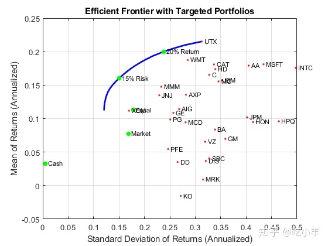
要查看这些目标投资组合的外观，使用dataset对象设置包含投资组合权重和资产名称（从Portfolio对象获得）的记录本。
aBlotter = dataset({100*awgt(awgt > 0),'Weight'}, 'obsnames', p.AssetList(awgt > 0));
?
displayPortfolio(sprintf('Portfolio with %g%% Target Return', 100*TargetReturn), aBlotter, false);
Portfolio with 20% Target Return
Weight
CAT 1.1445
INTC 0.17452
MO 9.6521
MSFT 0.85862
UTX 56.918
WMT 31.253
bBlotter = dataset({100*bwgt(bwgt > 0),'Weight'}, 'obsnames', p.AssetList(bwgt > 0));
?
displayPortfolio(sprintf('Portfolio with %g%% Target Risk', 100*TargetRisk), bBlotter, false);
Portfolio with 15% Target Risk
Weight
BA 3.1996e-22
C 1.8304e-22
DIS 1.6394e-20
GE 4.2564e-21
HD 3.9772e-21
INTC 2.2585
JNJ 9.2162
JPM 2.2817e-21
KO 1.6585e-21
MMM 16.603
MO 15.388
MSFT 4.4467
PG 4.086
UTX 10.281
WMT 25.031
XOM 12.69交易成本
Portfolio对象使得将交易成本作为优化问题的一部分进行考虑成为可能。尽管可以为每种资产设置单独的成本，但可以使用Portfolio对象函数的标量扩展功能为所有资产设置统一的交易成本，并将有效边界与总投资收益与净投资收益进行比较。
BuyCost = 0.0020;
SellCost = 0.0020;
?
q = setCosts(p,BuyCost,SellCost);
?
qwgt = estimateFrontier(q,20);
[qrsk,qret] = estimatePortMoments(q,qwgt);
?
% Plot efficient frontiers with gross and net returns
?
clf;
portfolioexamples_plot('Efficient Frontier with and without Transaction Costs', ...
{'line', prsk, pret, {'Gross'}, ':b'}, ...
{'line', qrsk, qret, {'Net'}}, ...
{'scatter', [mrsk, crsk, ersk], [mret, cret, eret], {'Market', 'Cash', 'Equal'}}, ...
{'scatter', sqrt(diag(p.AssetCovar)), p.AssetMean, p.AssetList, '.r'});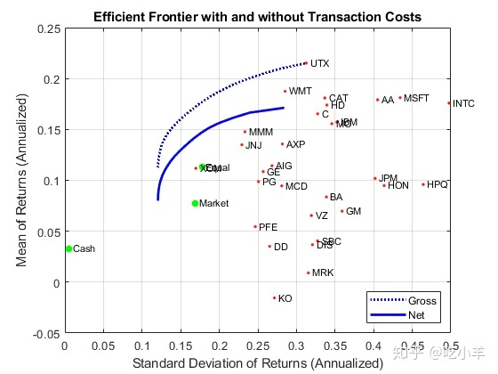
周转限制
除交易成本外，Portfolio对象还可以处理营业额限制。下面的示例说明，营业额约束会在可能限制交易的初始投资组合附近产生有效边界。此外，引入营业额约束通常意味着可能需要多次交易才能从初始投资组合转移到不受约束的有效边界。因此，营业额约束引入了一种时间多样化的形式，可以使交易分散在多个时间段内。在此示例中，请注意，estimateFrontier函数的购买和销售总和确认已满足营业额约束。
BuyCost = 0.0020;
SellCost = 0.0020;
Turnover = 0.2;
?
q = setCosts(p, BuyCost,SellCost);
q = setTurnover(q,Turnover);
?
[qwgt,qbuy,qsell] = estimateFrontier(q,20);
[qrsk,qret] = estimatePortMoments(q,qwgt);
?
% Plot efficient frontier with turnover constraint
?
clf;
portfolioexamples_plot('Efficient Frontier with Turnover Constraint', ...
{'line', prsk, pret, {'Unconstrained'}, ':b'}, ...
{'line', qrsk, qret, {sprintf('%g%% Turnover', 100*Turnover)}}, ...
{'scatter', [mrsk, crsk, ersk], [mret, cret, eret], {'Market', 'Cash', 'Equal'}}, ...
{'scatter', sqrt(diag(p.AssetCovar)), p.AssetMean, p.AssetList, '.r'});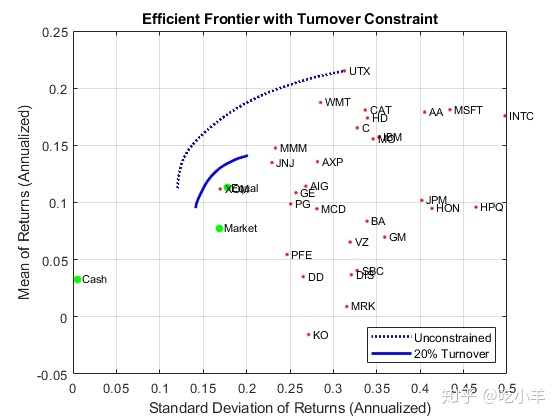
displaySumOfTransactions(Turnover, qbuy, qsell)
Sum of Purchases by Portfolio along Efficient Frontier (Max. Turnover 20%)
20.0000 20.0000 20.0000 20.0000 20.0000 20.0000 20.0000 20.0000 20.0000 20.0000 20.0000 20.0000 20.0000 20.0000 20.0000 20.0000 20.0000 20.0000 20.0000 20.0000
Sum of Sales by Portfolio along Efficient Frontier (Max. Turnover 20%)
20.0000 20.0000 20.0000 20.0000 20.0000 20.0000 20.0000 20.0000 20.0000 20.0000 20.0000 20.0000 20.0000 20.0000 20.0000 20.0000 20.0000 20.0000 20.0000 20.0000 误差跟踪约束
Portfolio对象可以处理误差跟踪约束，其中跟踪误差是投资组合与跟踪投资组合相比的相对风险。在此示例中，九个资产的子集合构成了一个权重相等的跟踪投资组合。目标是找到跟踪误差在此跟踪投资组合的5％以内的有效投资组合。
ii = [15, 16, 20, 21, 23, 25, 27, 29, 30]; % Indexes of assets to include in tracking portfolio
?
TrackingError = 0.05/sqrt(12);
TrackingPort = zeros(30, 1);
TrackingPort(ii) = 1;
TrackingPort = (1/sum(TrackingPort))*TrackingPort;
?
q = setTrackingError(p,TrackingError,TrackingPort);
?
qwgt = estimateFrontier(q,20);
[qrsk,qret] = estimatePortMoments(q,qwgt);
?
[trsk,tret] = estimatePortMoments(q,TrackingPort);
?
% Plot efficient frontier with tracking-error constraint
?
clf;
portfolioexamples_plot('Efficient Frontier with 5% Tracking-Error Constraint', ...
{'line', prsk, pret, {'Unconstrained'}, ':b'}, ...
{'line', qrsk, qret, {'Tracking'}}, ...
{'scatter', [mrsk, crsk], [mret, cret], {'Market', 'Cash'}}, ...
{'scatter', trsk, tret, {'Tracking'}, 'r'});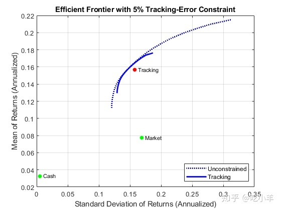
组合的周转和误差跟踪约束
此示例说明了组合约束可能发生的交互。在这种情况下，必须同时满足相对于初始等权资产投资组合的周转约束和相对于追踪投资组合的跟踪误差约束。周转额约束条件的最大值为周转额的30％，跟踪误差约束条件的误差最大值的5％。请注意，从初始投资组合到跟踪投资组合的周转额是70％，因此，周转额上限为30％意味着有效边界将位于初始投资组合和跟踪投资组合之间。
Turnover = 0.3;
InitPort = (1/q.NumAssets)*ones(q.NumAssets, 1);
?
ii = [15, 16, 20, 21, 23, 25, 27, 29, 30]; % Indexes of assets to include in tracking portfolio
?
TrackingError = 0.05/sqrt(12);
TrackingPort = zeros(30, 1);
TrackingPort(ii) = 1;
TrackingPort = (1/sum(TrackingPort))*TrackingPort;
?
q = setTurnover(q,Turnover,InitPort);
?
qwgt = estimateFrontier(q,20);
[qrsk,qret] = estimatePortMoments(q,qwgt);
?
[trsk,tret] = estimatePortMoments(q,TrackingPort);
[ersk,eret] = estimatePortMoments(q,InitPort);
?
% Plot efficient frontier with combined turnover and tracking-error constraint
?
clf;
portfolioexamples_plot('Efficient Frontier with Turnover and Tracking-Error Constraint', ...
{'line', prsk, pret, {'Unconstrained'}, ':b'}, ...
{'line', qrsk, qret, {'Turnover & Tracking'}}, ...
{'scatter', [mrsk, crsk], [mret, cret], {'Market', 'Cash'}}, ...
{'scatter', trsk, tret, {'Tracking'}, 'r'}, ...
{'scatter', ersk, eret, {'Initial'}, 'b'});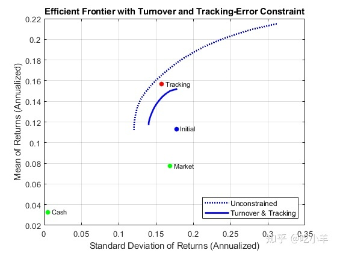
最大化夏普比率
夏普比率（Sharpe 1966）是衡量风险收益率的一种方法，在投资组合分析中起着重要作用。具体来说，根据共同基金定理，最大化夏普比率的投资组合也是有效边界上的相切组合。最大夏普比率投资组合位于函数estimateMaxSharpeRatio的有效边界上，并且dataset对象用于列出该投资组合中的资产。
p = setInitPort(p, 0);
?
swgt = estimateMaxSharpeRatio(p);
[srsk,sret] = estimatePortMoments(p,swgt);
?
% Plot efficient frontier with portfolio that attains maximum Sharpe ratio
?
clf;
portfolioexamples_plot('Efficient Frontier with Maximum Sharpe Ratio Portfolio', ...
{'line', prsk, pret}, ...
{'scatter', srsk, sret, {'Sharpe'}}, ...
{'scatter', [mrsk, crsk, ersk], [mret, cret, eret], {'Market', 'Cash', 'Equal'}}, ...
{'scatter', sqrt(diag(p.AssetCovar)), p.AssetMean, p.AssetList, '.r'});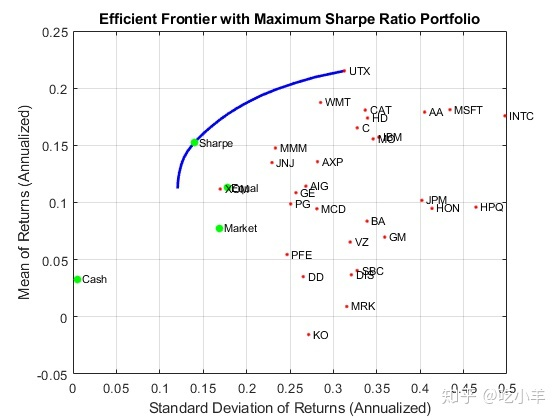
% Set up a dataset object that contains the portfolio that maximizes the Sharpe ratio
?
Blotter = dataset({100*swgt(swgt > 0),'Weight'}, 'obsnames', AssetList(swgt > 0));
?
displayPortfolio('Portfolio with Maximum Sharpe Ratio', Blotter, false);
Portfolio with Maximum Sharpe Ratio
Weight
AA 1.9766e-15
AIG 1.9146e-15
AXP 1.0611e-15
BA 5.6229e-16
C 2.0142e-15
CAT 2.9838e-15
DD 3.1459e-16
DIS 5.9796e-16
GE 5.6384e-15
GM 7.3545e-16
HD 2.0404e-11
HON 3.322e-16
HPQ 2.0397e-15
IBM 8.9075e-15
INTC 2.6638
JNJ 9.0044
JPM 5.4252e-16
KO 2.4688e-16
MCD 8.782e-16
MMM 15.502
MO 13.996
MRK 3.235e-16
MSFT 4.4777
PFE 7.3698e-16
PG 7.4588
SBC 3.8468e-16
UTX 6.0056
VZ 3.9213e-16
WMT 22.051
XOM 18.841确认最大夏普比率是最大的
下图说明了此投资组合（位于图中的点处）确实使有效边界上所有投资组合中的夏普比率最大化。
psratio = (pret - p.RiskFreeRate) ./ prsk;
ssratio = (sret - p.RiskFreeRate) / srsk;
?
clf;
subplot(2,1,1);
plot(prsk, pret, 'LineWidth', 2);
hold on
scatter(srsk, sret, 'g', 'filled');
title('\bfEfficient Frontier');
xlabel('Portfolio Risk');
ylabel('Portfolio Return');
hold off
?
subplot(2,1,2);
plot(prsk, psratio, 'LineWidth', 2);
hold on
scatter(srsk, ssratio, 'g', 'filled');
title('\bfSharpe Ratio');
xlabel('Portfolio Risk');
ylabel('Sharpe Ratio');
hold off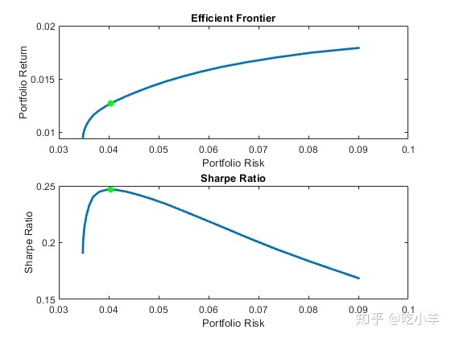
图解夏普值是切线组合
下图显示了最大化Sharpe比率的投资组合也是一个相切的投资组合（在这种情况下，开放预算约束以允许使用0％到100％的现金）。
q = setBudget(p, 0, 1);
?
qwgt = estimateFrontier(q,20);
[qrsk,qret] = estimatePortMoments(q,qwgt);
?
% Plot that shows Sharpe ratio portfolio is the tangency portfolio
?
clf;
portfolioexamples_plot('Efficient Frontier with Maximum Sharpe Ratio Portfolio', ...
{'line', prsk, pret}, ...
{'line', qrsk, qret, [], [], 1}, ...
{'scatter', srsk, sret, {'Sharpe'}}, ...
{'scatter', [mrsk, crsk, ersk], [mret, cret, eret], {'Market', 'Cash', 'Equal'}}, ...
{'scatter', sqrt(diag(p.AssetCovar)), p.AssetMean, p.AssetList, '.r'});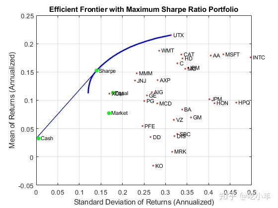
美元中性的对冲基金结构
为了说明如何在对冲基金管理中使用投资组合优化工具，研究了两种中性的美元对立投资策略和130-30投资组合策略。美元中立策略在多头和空头头寸上均等投资，因此净投资头寸为0。此类投资组合被称为“美元中立”。
要建立与美元中性的投资组合，请从“标准”投资组合问题开始，并在变量Exposure中设置多头和空头头寸的最大敞口。单个资产权重的界限为正或负Exposure。由于净头寸必须与美元中性的，因此预算约束为0，初始投资组合必须为0。最后，单向营业额限制提供了必要的多头和空头限制，以防止多头和空头的“重复计算”。下图显示了美元中性投资组合的投资组合权重，从而使Sharpe比率最大化。多头和空头头寸是从相对于初始投资组合的买卖交易中获得的。
Exposure = 1;
?
q = setBounds(p, -Exposure, Exposure);
q = setBudget(q, 0, 0);
q = setOneWayTurnover(q, Exposure, Exposure, 0);
?
[qwgt,qlong,qshort] = estimateFrontier(q,20);
[qrsk,qret] = estimatePortMoments(q,qwgt);
?
[qswgt,qslong,qsshort] = estimateMaxSharpeRatio(q);
[qsrsk,qsret] = estimatePortMoments(q,qswgt);
?
% Plot efficient frontier for a dollar-neutral fund structure with tangency portfolio
?
clf;
portfolioexamples_plot('Efficient Frontier with Dollar-Neutral Portfolio', ...
{'line', prsk, pret, {'Standard'}, 'b:'}, ...
{'line', qrsk, qret, {'Dollar-Neutral'}, 'b'}, ...
{'scatter', qsrsk, qsret, {'Sharpe'}}, ...
{'scatter', [mrsk, crsk, ersk], [mret, cret, eret], {'Market', 'Cash', 'Equal'}}, ...
{'scatter', sqrt(diag(p.AssetCovar)), p.AssetMean, p.AssetList, '.r'});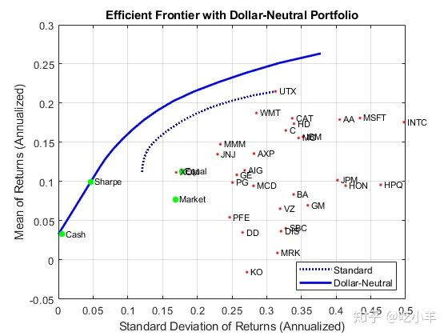
% Set up a dataset object that contains the portfolio that maximizes the Sharpe ratio
?
Blotter = dataset({100*qswgt(abs(qswgt) > 1.0e-4), 'Weight'}, ...
{100*qslong(abs(qswgt) > 1.0e-4), 'Long'}, ...
{100*qsshort(abs(qswgt) > 1.0e-4), 'Short'}, ...
'obsnames', AssetList(abs(qswgt) > 1.0e-4));
?
displayPortfolio('Dollar-Neutral Portfolio with Maximum Sharpe Ratio', Blotter, true, 'Dollar-Neutral');
Dollar-Neutral Portfolio with Maximum Sharpe Ratio
Weight Long Short
AA 0.5088 0.5088 0
AIG 3.0394 3.0394 0
AXP 0.92797 0.92797 0
BA -3.4952 0 3.4952
C 14.003 14.003 0
CAT 3.7261 3.7261 0
DD -18.063 0 18.063
DIS -4.8236 0 4.8236
GE -3.6178 0 3.6178
GM -3.7211 0 3.7211
HD 1.101 1.101 0
HON -1.4349 0 1.4349
HPQ 0.09909 0.09909 0
IBM -8.0585 0 8.0585
INTC 1.7693 1.7693 0
JNJ 1.3696 1.3696 0
JPM -2.5271 0 2.5271
KO -14.205 0 14.205
MCD 3.91 3.91 0
MMM 7.5995 7.5995 0
MO 4.0856 4.0856 0
MRK 3.747 3.747 0
MSFT 4.0769 4.0769 0
PFE -9.096 0 9.096
PG 1.6493 1.6493 0
SBC -5.2547 0 5.2547
UTX 5.7454 5.7454 0
VZ -2.438 0 2.438
WMT 0.84844 0.84844 0
XOM 18.529 18.529 0
?
Confirm Dollar-Neutral Portfolio
(Net, Long, Short)
0.0000 76.7350 76.7350 130/30基金结构
最后，周转限制可以用于建立130-30投资组合结构，该结构具有净多头头寸，但允许多头和空头头寸的杠杆达到最大杠杆量。对于130-30的投资组合，杠杆为30％。
要设置130-30的投资组合，请从“标准”投资组合问题开始，然后在变量Leverage中设置杠杆的最大值。单个资产权重的范围在-Leverage和1 + Leverage之间。由于净头寸必须是多头，因此预算约束为1，再次，初始投资组合为0。最后，单向营业额限制提供了必要的多头和空头限制，以防止多头和空头的“重复计算”。图表显示了130-30个投资组合的投资组合权重，从而最大化了Sharpe比率。多头和空头头寸是从相对于初始投资组合的买卖交易中获得的。
Leverage = 0.3;
?
q = setBounds(p, -Leverage, 1 + Leverage);
q = setBudget(q, 1, 1);
q = setOneWayTurnover(q, 1 + Leverage, Leverage);
?
[qwgt,qbuy,qsell] = estimateFrontier(q,20);
[qrsk,qret] = estimatePortMoments(q,qwgt);
?
[qswgt,qslong,qsshort] = estimateMaxSharpeRatio(q);
[qsrsk,qsret] = estimatePortMoments(q,qswgt);
?
% Plot efficient frontier for a 130-30 fund structure with tangency portfolio
?
clf;
portfolioexamples_plot(sprintf('Efficient Frontier with %g-%g Portfolio', ...
100*(1 + Leverage),100*Leverage), ...
{'line', prsk, pret, {'Standard'}, 'b:'}, ...
{'line', qrsk, qret, {'130-30'}, 'b'}, ...
{'scatter', qsrsk, qsret, {'Sharpe'}}, ...
{'scatter', [mrsk, crsk, ersk], [mret, cret, eret], {'Market', 'Cash', 'Equal'}}, ...
{'scatter', sqrt(diag(p.AssetCovar)), p.AssetMean, p.AssetList, '.r'});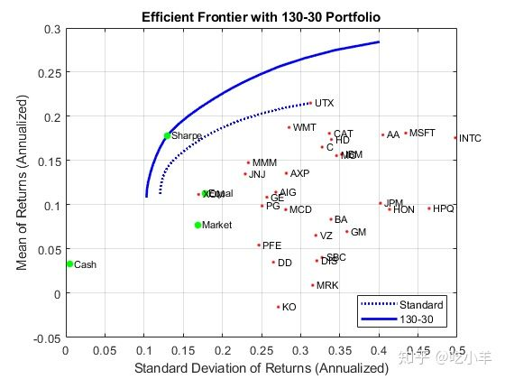
% Set up a dataset object that contains the portfolio that maximizes the Sharpe ratio
?
Blotter = dataset({100*qswgt(abs(qswgt) > 1.0e-4), 'Weight'}, ...
{100*qslong(abs(qswgt) > 1.0e-4), 'Long'}, ...
{100*qsshort(abs(qswgt) > 1.0e-4), 'Short'}, ...
'obsnames', AssetList(abs(qswgt) > 1.0e-4));
?
displayPortfolio(sprintf('%g-%g Portfolio with Maximum Sharpe Ratio', 100*(1 + Leverage), 100*Leverage), Blotter, true, sprintf('%g-%g', 100*(1 + Leverage), 100*Leverage));
130-30 Portfolio with Maximum Sharpe Ratio
Weight Long Short
DD -9.5565 0 9.5565
HON -6.0244 0 6.0244
INTC 4.0335 4.0335 0
JNJ 7.1234 7.1234 0
JPM -0.44583 0 0.44583
KO -13.646 0 13.646
MMM 20.908 20.908 0
MO 14.433 14.433 0
MSFT 4.5592 4.5592 0
PG 17.243 17.243 0
SBC -0.32712 0 0.32712
UTX 5.3584 5.3584 0
WMT 21.018 21.018 0
XOM 35.323 35.323 0
?
Confirm 130-30 Portfolio
(Net, Long, Short)
100.0000 130.0000 30.0000 参考文献
- R. C. Grinold and R. N. Kahn. Active Portfolio Management. 2nd ed.,2000.
- H. M. Markowitz. "Portfolio Selection." Journal of Finance. Vol. 1, No. 1, pp. 77-91, 1952.
- J. Lintner. "The Valuation of Risk Assets and the Selection of Risky Investments in Stock Portfolios and Capital Budgets." Review of Economics and Statistics. Vol. 47, No. 1, pp. 13-37, 1965.
- H. M. Markowitz. Portfolio Selection: Efficient Diversification of Investments. John Wiley & Sons, Inc., 1959.
- W. F. Sharpe. "Mutual Fund Performance." Journal of Business. Vol. 39, No. 1, Part 2, pp. 119-138, 1966.
- J. Tobin. "Liquidity Preference as Behavior Towards Risk." Review of Economic Studies. Vol. 25, No.1, pp. 65-86, 1958.
- J. L. Treynor and F. Black. "How to Use Security Analysis to Improve Portfolio Selection." Journal of Business. Vol. 46, No. 1, pp. 68-86, 1973.
工具函数
function displaySumOfTransactions(Turnover, qbuy, qsell)
fprintf('Sum of Purchases by Portfolio along Efficient Frontier (Max. Turnover %g%%)\n', ...
100*Turnover);
fprintf('%.4f ', 100*sum(qbuy)), sprintf('\n\n');
fprintf('\n')
fprintf('Sum of Sales by Portfolio along Efficient Frontier (Max. Turnover %g%%)\n', ...
100*Turnover);
fprintf('%.4f ', 100*sum(qsell));
end
?
function displayPortfolio(Description, Blotter, LongShortFlag, portfolioType)
fprintf('%s\n', Description);
disp(Blotter);
if (LongShortFlag)
fprintf('Confirm %s Portfolio\n', portfolioType);
fprintf(' (Net, Long, Short)\n');
fprintf('%.4f ' , [ sum(Blotter.Weight), sum(Blotter.Long), sum(Blotter.Short) ]);
end
end注：本文根据MATLAB官网内容修改而成。
======================================================================
我的测试结果及程序
下面是我测试的代码：